Create Dumbbell Plots to Visualize Group Differences in R
The coronavirus (also known as COVID-19) is a pandemic. As of this writing, nearly 6000 people have died and another 150,000 have been infected. All signs seem to show that the virus is only growing.
But some groups are less worried about COVID-19 than others. Recent polling from Quinnipiac University suggests that worries about coronavirus are related to one’s partisan identity, age, and race.
Let’s visualize that to see just how stark the differences are. I use dumbbell dot plots because they’re some of the most powerful tools for visualizing differences between two groups (e.g. Republicans and Democrats).
Political Affiliation
Republicans tend to be significantly less worried about coronavirus than Democrats. This is true in two regards. First, with respect to concern for becoming infected:
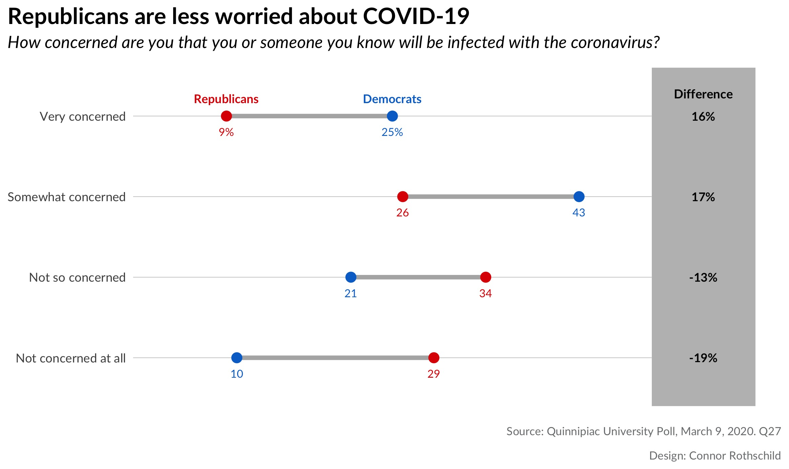
It’s also true when we look at concern than COVID-19 will disrupt an individual’s life:
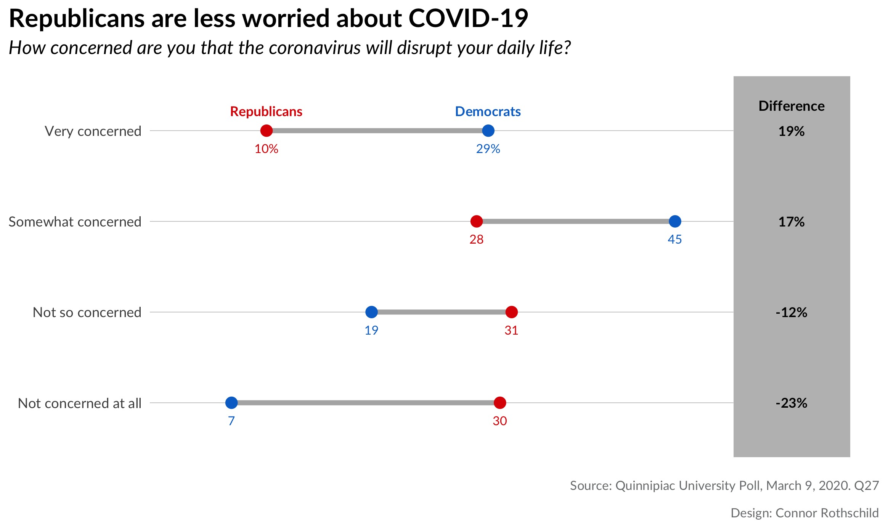
Looking at the first plot, we notice that Republicans are 3x more likely than Democrats to say that they are ’not concerned at all’ by the prospect of coronavirus infecting them or someone they know. By contrast, Democrats are nearly 3x as likely as Republicans to say that they are ‘very concerned’ by the same risk.
The second plot shows us similar trends for fears of disruption: 3 in 4 Democrats are concerned (very or somewhat) that COVID-19 will disrupt their daily lives, compared to only 38% of Republicans. While 26% of Democrats are not worried about disruption, the same is true for 61% of Republicans.
Age
There is also a relationship between age and fears related to the coronavirus.
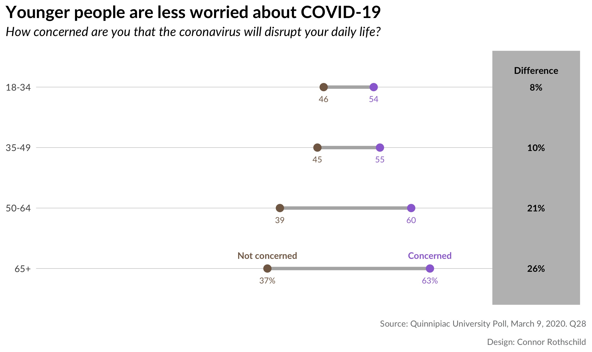
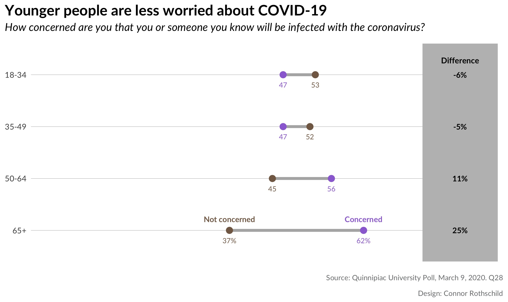
These plots show that there are significant differences in worry by age, but that fears of disruption are felt more universally than fears of infection. The first plot shows that every age group fears that COVID-19 will disrupt their daily lives; although younger people express this sentiment less frequently. The second plot the majority of people under age 50 are unconcerned by the prospect of COVID-19 infection. The opposite is true for older respondents; those aged 65 years and old are significantly more likely to be concerned by the risk of infection (62% vs 37%).
Why Dumbbell Plots?
Dumbbell plots are an alternative to grouped barcharts. Like barcharts, they show differences between populations and they more powerfully represent the distances between two groups. They are frequently used by survey research firms such as the Pew Research Center, as seen in this example:
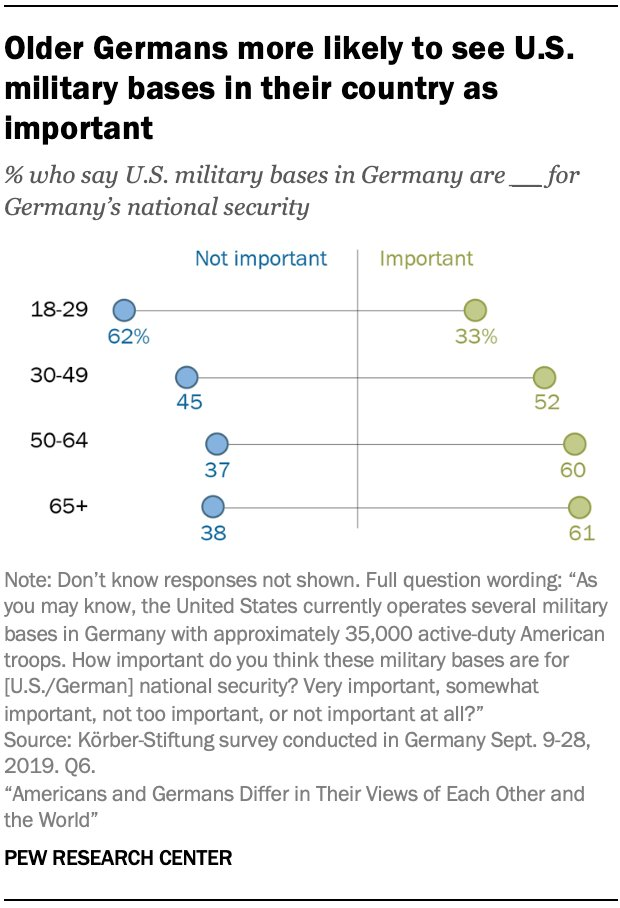
While a barchart would require eight bars to visualize each datapoint above, a dumbbell dot plot shows eight dots on four lines, reducing clutter and emphasizing the differences between groups.
Here’s another example, this time from Axios (visualizing changes in presidential disapproval between January and October 2017):
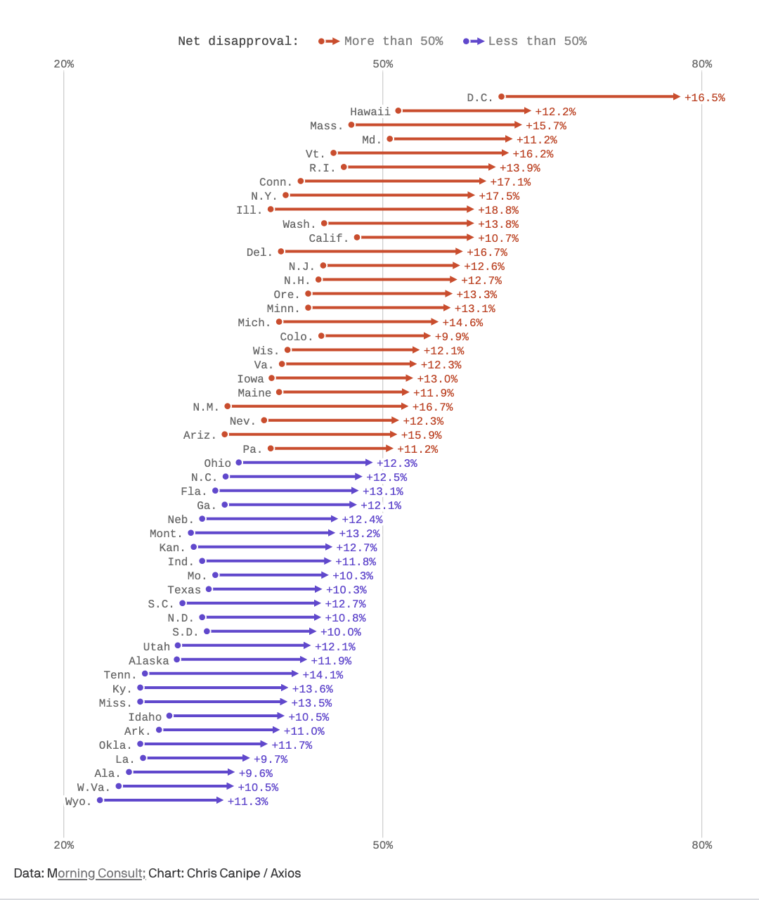
This pseudo-dumbbell plot (dumbbells with weird endpoints; don’t pick up that side!) has 50 ‘groups’ (US states), but only two outcomes (January and October). A dumbbell plot is far superior to a grouped bar chart in this case because it emphasizes the difference is between two periods of time, and it does so with fewer objects (50 lines rather than 100 bars) than a barchart would use.
One key lesson from the examples above: If the comparison of interest is between two groups (e.g. Republicans and Democrats), or if the outcome of interest is two-fold (e.g. ‘concerned’ and ‘not concerned’), dot plots are a superior way to visualize your data.
Let’s Make It In R!
Now it’s time to make your own dumbbell dot plot. We’ll be creating this viz:
For reference, the data I’m using looks like this:
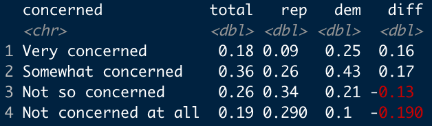
Pretty simple, right? It comes from here, by the way.
The process relies on Bob Rudis’s ggalt package and the geom_dumbbell function, which does most of the heavy lifting. This tutorial is mostly a step-by-step recreation of Rudis’s code
found here.
For convenience, let’s define a few things before we get started:
blue <- "#0171CE"
red <- "#DE4433"
In addition to the colors, we create a hack-y function which allows us to selectively label points (thanks to Bob Rudis for this, again):
percent_first <- function(x) {
x <- sprintf("%d%%", round(x*100))
x[2:length(x)] <- sub("%$", "", x[2:length(x)])
x
}
Step 1: Barebones
We begin with a basic ggplot object. In geom_segment, we define the pseudo-grid lines (one for each ‘level’ of concern).
library(ggplot2)
library(ggalt)
library(tidyverse)
ggplot() +
geom_segment(data=infected, aes(y=concerned, yend=concerned, x=0, xend=.5),
color="#b2b2b2", size=0.15)
Here, geom_segment creates grey lines with a size of 0.15. The lines span from 0 to 0.5. This changes according to your data; because the largest number we are dealing with is .43 (representing 43% of Democrats), our bound on the right side can be 0.5; this also leaves room for the difference column which we create later.
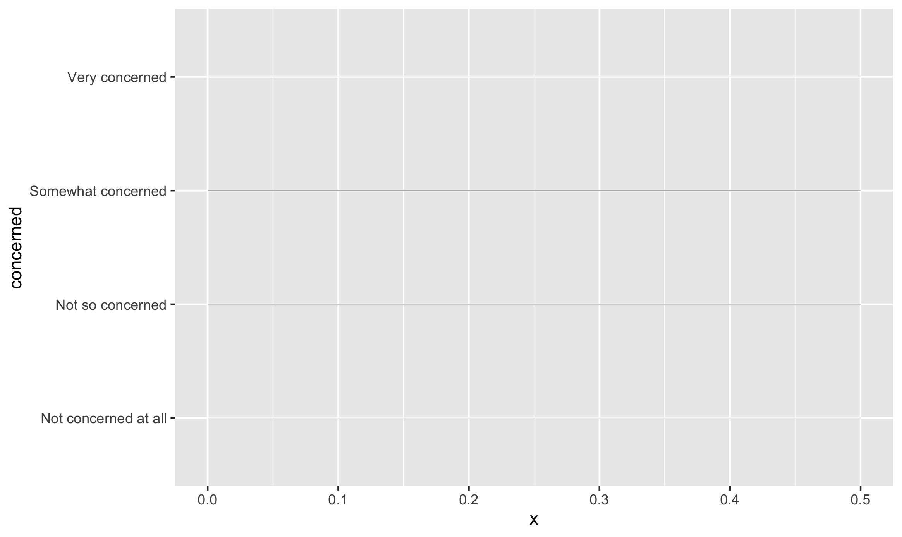
Then, geom_dumbbell reads in our data and creates the dumbbells: we specify the beginning (x) of each dumbbell to represent Republicans and the end (xend) to correspond to Democrats. Other specifications affect the accompanying line and points.
geom_dumbbell(data=infected, aes(y=concerned, x=rep, xend=dem),
size=1.5, color="#b2b2b2", size_x=3, size_xend = 3,
colour_x = red, colour_xend = blue)
That code creates the following plot:
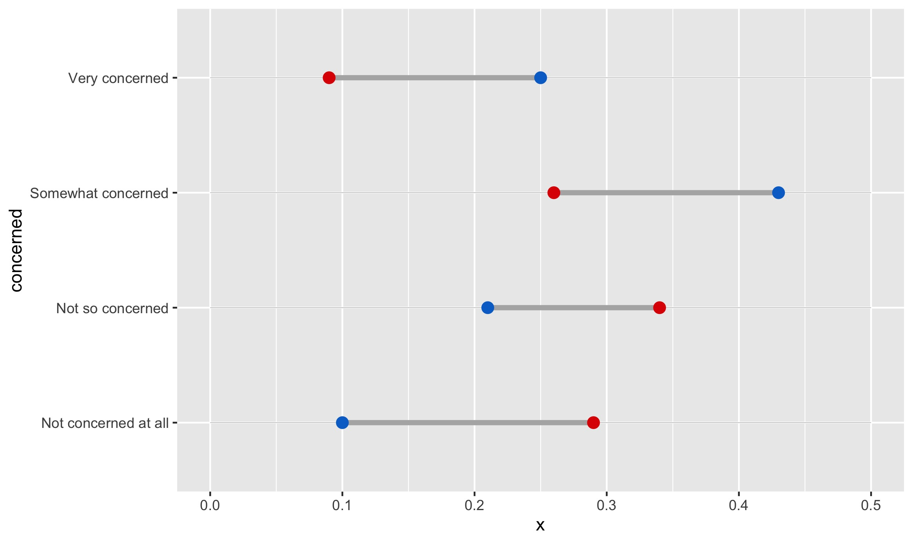Already, we can begin to see the barebones for the finished version: each dumbbell represents a level of concern, and visualizes Republicans and Democrats’ proportions for that level.
Step 2: Labels
The next step is creating the “Republican” and “Democrat” labels (in case colors aren’t enough, or the image is seen in black and white!).
We can create labels with the following code:
geom_text(data=filter(infected, concerned=="Very concerned"),
aes(x=dem, y=concerned, label="Democrats"),
color=blue, size=3, vjust=-1.5, fontface="bold", family="Lato") +
geom_text(data=filter(infected, concerned=="Very concerned"),
aes(x=rep, y=concerned, label="Republicans"),
color=red, size=3, vjust=-1.5, fontface="bold", family="Lato")
This code is hopefully quite intuitive. Since we are only showing the labels once, we specify a filter in the data argument of geom_text. If we instead wanted to show the labels for only the bottom level of concern, we would specify data=filter(infected, concerned=="Not concerned at all”).
We label each point at its respective political affiliation, and we specify color according to the point color. The rest is just minor beautification for the text.
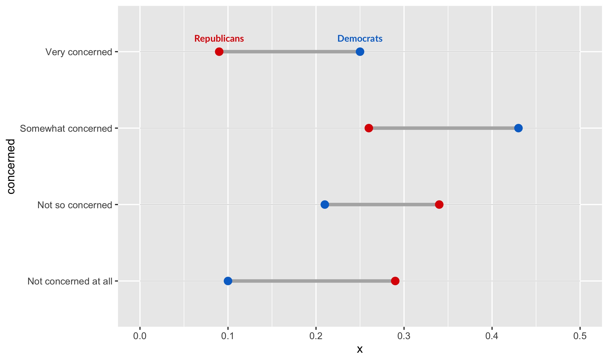
We also have to add direct labels for values, so that the exact percentages for each group are clear:
geom_text(data=infected, aes(x=rep, y=concerned, label=percent_first(rep)),
color=red, size=2.75, vjust=2.5, family="Lato") +
geom_text(data=infected, color=blue, size=2.75, vjust=2.5, family="Lato",
aes(x=dem, y=concerned, label=percent_first(dem)))
Here, we utilize the function percent_first we defined earlier, because we only want percentages to appear on the first numbers (to reduce clutter). The rest of the labels are just numbers which represent percentages. The syntax here is simple syntax that should be familiar to ggplot users. It creates this output:
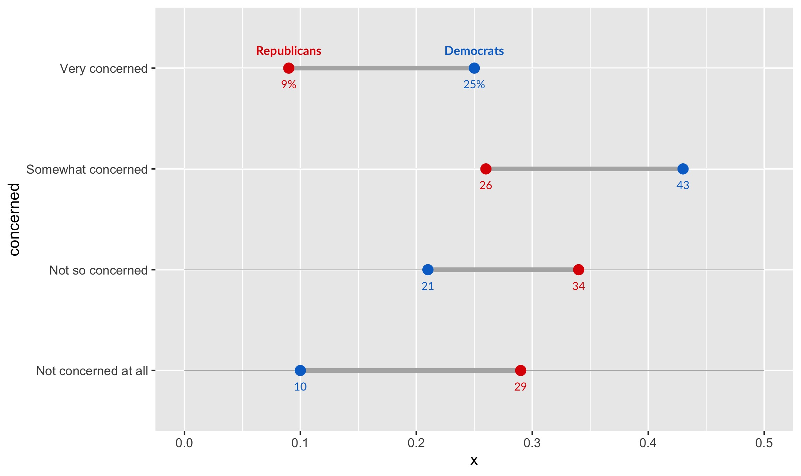
Step 3: A Differences Column
Finally, we want to help our viewers see how stark the differences between Democrats and Republicans really is. We do so with a differences column.
geom_rect(data=infected, aes(xmin=.5, xmax=.6, ymin=-Inf, ymax=Inf), fill="grey") +
geom_text(data=infected, aes(label=paste0(diff*100, "%"), y=concerned, x=.55), fontface="bold", size=3, family="Lato") +
geom_text(data=filter(infected, concerned=="Very concerned"),
aes(x=.55, y=concerned, label="Difference"),
color="black", size=3.1, vjust=-2, fontface="bold", family="Lato") +
scale_x_continuous(expand=c(0,0), limits=c(0, .625)) +
scale_y_discrete(expand=c(0.2,0))
Here, we first create a grey rectangle with geom_rect. It spans the entire chart vertically, hence why ymin and ymax range from negative to positive infinity. Next, we create labels according to the differences column. We position each of them according to the degree of concern (our y-axis). Finally, we expand the bounds of the chart so its a bit prettier:
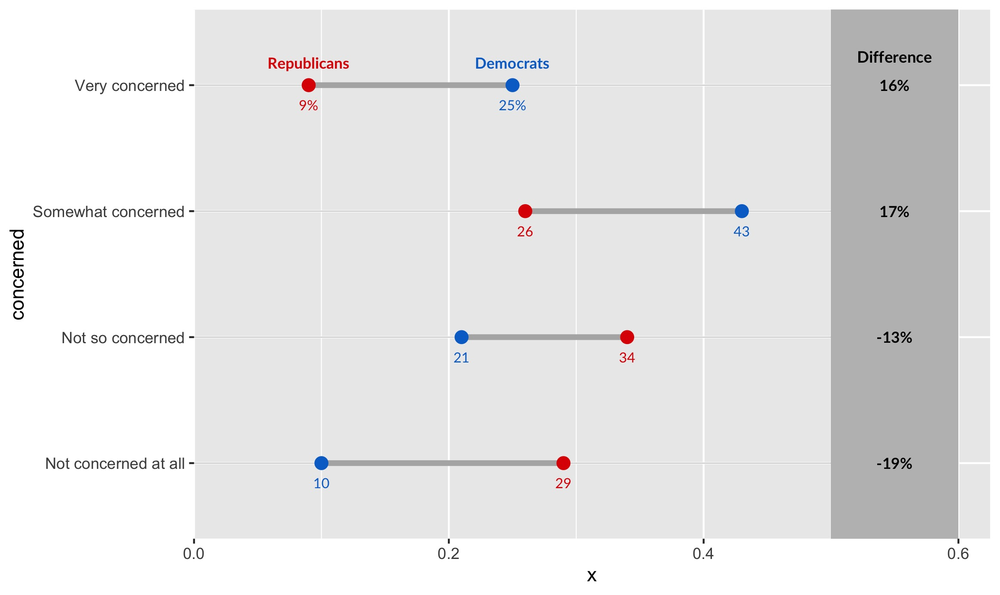
Step 4: Titles, Labels & Captions
Finally, let’s add our title, subtitle, caption, and axis labels:
labs(x=NULL, y=NULL, title="Republicans are less worried about COVID-19",
subtitle="How concerned are you that you or someone
you know will be infected with the coronavirus?",
caption="Source: Quinnipiac University Poll, March 9, 2020. Q27
\n\nDesign: Connor Rothschild")
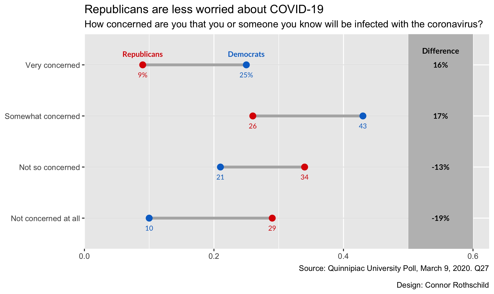
That’s our plot! Too bad its kinda ugly. Let’s fix that in our final step.
Step 5: Beautification
Beautification occurs using the theme argument.
theme_bw(base_family="Lato") +
theme(
panel.grid.major=element_blank(),
panel.grid.minor=element_blank(),
panel.border=element_blank(),
axis.ticks=element_blank(),
axis.text.x=element_blank(),
plot.title=element_text(size = 16, face="bold"),
plot.title.position = "plot",
plot.subtitle=element_text(face="italic", size=12, margin=margin(b=12)),
plot.caption=element_text(size=8, margin=margin(t=12), color="#7a7d7e")
)
After specifying our base ggplot theme, theme_bw, we use theme() to specify a whole host of arguments.
To simplify, the above code:
- Removes grid lines (
panel.grid.major,panel.grid.minor) - Removes the panel border (
panel.border) - Removes axis ticks and axis text (
axis.ticks,axis.text.x) - Positions the axis plot, subtitle, and caption, and styles them as well (
plot.title,plot.title.position,plot.subtitle,plot.caption).
Our final output:

To Summarize
Our process looked like this:
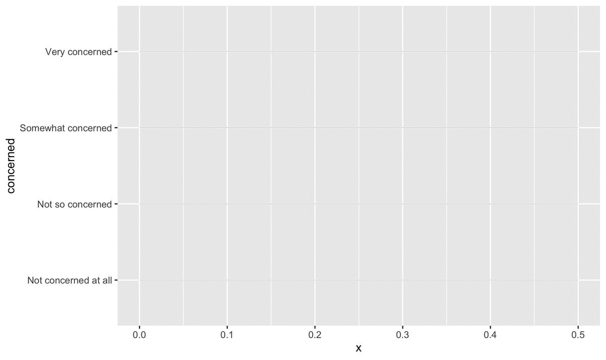
The code for the above visualizations, as well as the underlying datasets and outputs, can be found here.
Thanks for reading!
Connor Rothschild
Undergraduate at Rice University
I’m a senior at Rice University interested in public policy, data science and their intersection. I’m most passionate about translating complex data into informative and entertaining visualizations.